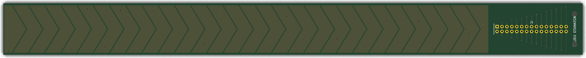
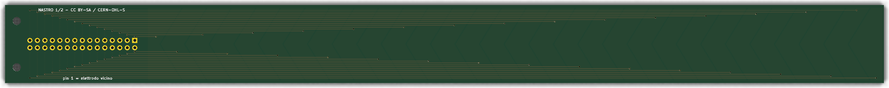
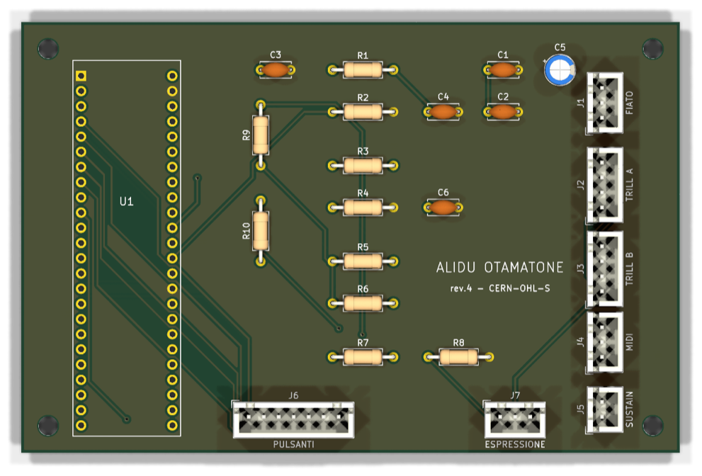
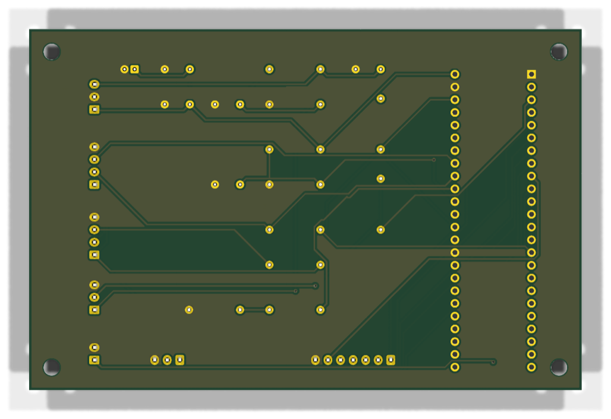
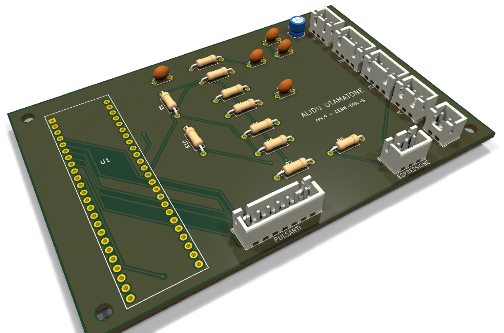
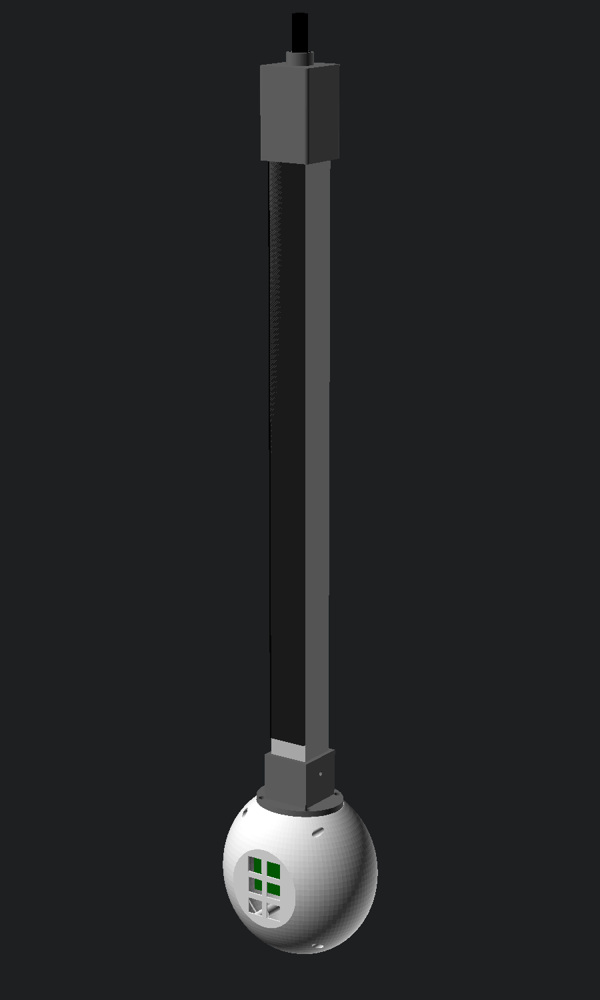
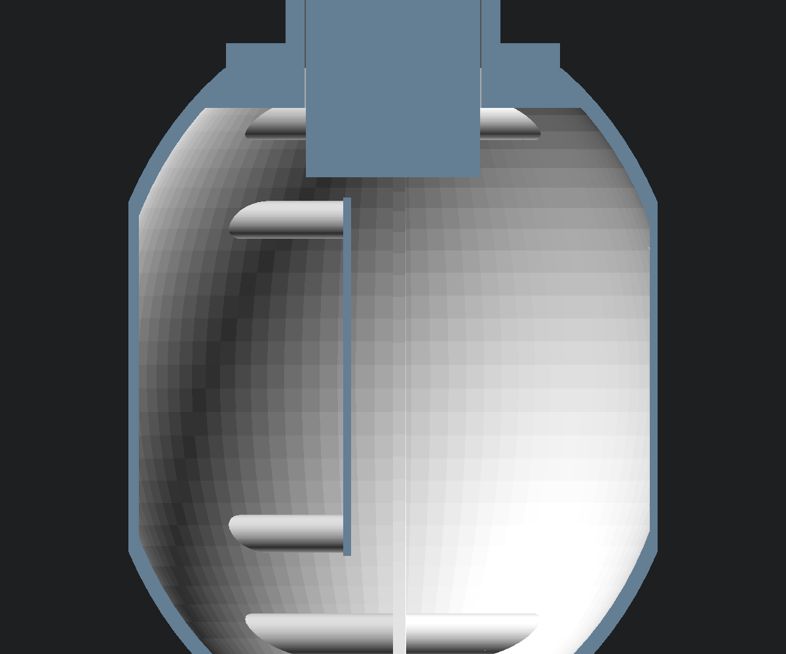
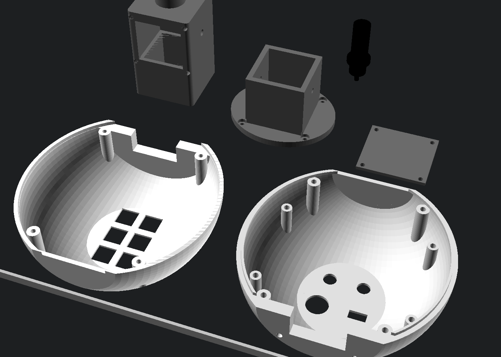

Costruire Alidu Otamatone
Questa guida porta dai file al primo suono. È scritta per chi ha già saldato qualche componente, ma spiega ogni passaggio. Calcola due o tre fine settimana: uno per i circuiti, uno per la meccanica, uno per il collaudo.
Attrezzi
- Saldatore a temperatura regolabile (330–350 °C), stagno 0,7 mm con flussante, treccia dissaldante.
- Tester (multimetro) con la prova di continuità che suona.
- Pinza crimpatrice per JST XH, oppure cavetti JST già crimpati (più semplice).
- Tronchesino, spellafili, cacciaviti, trapano con punte da 3, 9,5, 12 e 16 mm, lima.
- Un computer con Arduino IDE e Teensyduino per il firmware.
Materiali
Le quantità sono per uno strumento. I componenti sono comuni: si trovano dai grandi distributori di elettronica e nei negozi online.
Scheda principale
| Sigla | Componente | Q.tà |
|---|---|---|
| — | Circuito stampato "scheda" (file scheda-gerber.zip) | 1 |
| U1 | Teensy 4.1, con i pin già saldati o con due strisce maschio 1×24 | 1 |
| — | Strisce femmina 1×24 passo 2,54 mm (zoccolo: il Teensy resta estraibile) | 2 |
| R1 R3 R5 R6 | Resistore 4,7 kΩ 1%, a strato metallico, ¼ W | 4 |
| R2 R4 | Resistore 12 kΩ 1% | 2 |
| R7 | Resistore 1 kΩ | 1 |
| R8 | Resistore 100 kΩ | 1 |
| R9 | Resistore 33 Ω | 1 |
| R10 | Resistore 10 Ω | 1 |
| C1 C4 C6 | Condensatore ceramico 100 nF, passo 5 mm | 3 |
| C2 | Condensatore ceramico 1 µF, passo 5 mm | 1 |
| C3 | Condensatore ceramico 1 nF, passo 5 mm | 1 |
| C5 | Condensatore elettrolitico 10 µF 16 V, Ø 5 mm, passo 2 mm | 1 |
| J5 | Connettore JST XH 2 poli verticale (B2B-XH-A) | 1 |
| J1 J4 J7 | Connettore JST XH 3 poli (B3B-XH-A) | 3 |
| J2 J3 | Connettore JST XH 4 poli (B4B-XH-A) | 2 |
| J6 | Connettore JST XH 7 poli (B7B-XH-A) | 1 |
| — | Spine JST XH corrispondenti con contatti, o cavetti già crimpati | 7 |
Nastro delle note
| Parte | Componente | Q.tà |
|---|---|---|
| Circuito | Circuito stampato "nastro" (file nastro-gerber.zip): ne servono 2 uguali | 2 |
| Lettori | Bela Trill Craft | 2 |
| Connettori | Striscia maschio 2×15 passo 2,54 mm | 2 |
| Cavo | Cavo piatto 30 poli passo 1,27 mm + 2 connettori femmina IDC 2×15 | 2 × 15 cm |
| Copertura | Vetro temperato 2 mm, 505 × 35 mm, bordi molati, oppure foglio di acetato o PET 0,2–0,5 mm | 1 |
| Adesivo | Biadesivo trasparente a trasferimento (tipo OCA o 3M 467MP), 25 mm | 2 m |
| Fissaggio | Viti M2,5 × 8 con dadi, per le linguette | 4 |
Fiato, pannello e meccanica
| Parte | Componente | Q.tà |
|---|---|---|
| Sensore | Modulo MPXV7002DP (3 pin: VCC, GND, OUT) | 1 |
| Bocchino | Bocchino per controller a fiato o per sassofono contralto in plastica, lavabile | 1 |
| Tubo | Tubo in silicone alimentare 3 × 5 mm | 50 cm |
| Raccordi | Raccordo a T e raccordo diritto per tubo da 3 mm | 1 + 1 |
| Condensa | Piccolo filtro in linea trasparente (tipo acquario) o contenitore da 10 ml con tappo di scarico | 1 |
| Sfiato | Vite M3 a punta conica in un blocchetto forato (sfiato regolabile) | 1 |
| MIDI | Presa DIN 5 poli 180° da pannello | 1 |
| Pedali | Presa jack 6,35 mono da pannello (sustain) e stereo (espressione) | 1 + 1 |
| Pulsanti | Interruttori a tasto meccanici a lunga durata (tipo Cherry MX) con cappucci rotondi in metallo | 6 |
| USB | Prolunga da pannello USB-C femmina → micro-USB maschio, 20–30 cm | 1 |
| Manico | Profilato in alluminio a U 35 × 35 × 2 mm, lungo 600 mm | 1 |
| Pezzi stampati | Corpo (2 gusci), collare, testa con coperchio, innesto del bocchino, 4 guide del nastro: file STL nel capitolo 9. Circa 250 g di PETG | 1 serie |
| Inserti | Inserti filettati M3 a caldo, Ø esterno 4 mm, lunghi 5–6 mm | 18 |
| Viti | M3 × 16 (giunzione) ×4 · M3 × 10 (collare) ×4 · M3 × 6 (scheda e coperchio) ×8 · grani M3 × 6 ×2 | 18 |
Ordinare i circuiti stampati
I circuiti sono due: il nastro, che legge il dito, e la scheda, che porta il Teensy. Per ciascuno c'è un file .zip con tutti i file di produzione (Gerber e forature): è quello che vogliono i fabbricanti.




- Scarica i due pacchetti dalla pagina dei download:
nastro-gerber.zipescheda-gerber.zip. Non aprirli: si caricano così come sono. - Apri il sito di un fabbricante di circuiti stampati (JLCPCB, PCBWay, Aisler, Eurocircuits…) e carica il primo zip. Il sito legge da solo misure e strati.
- Imposta le opzioni: 2 strati, spessore 1,6 mm, rame 1 oz (35 µm), finitura HASL senza piombo, foratura minima 0,3 mm. Il colore è libero: sotto il vetro un circuito nero è il più elegante.
- Quantità. Il minimo d'ordine è di solito 5 pezzi. Per il nastro ne servono 2 per strumento: con 5 ne avanzano 3 di scorta, oppure per un secondo strumento.
- Per il nastro chiedi di non stampare il numero d'ordine sul lato degli elettrodi (opzione "rimuovi numero d'ordine" o "posizione specificata"). Sotto il vetro si vedrebbe.
- Ripeti per la scheda principale. Controlla il preventivo: un circuito lungo come il nastro, quasi 30 cm, può costare un po' più del solito.
hardware/nastro/nastro.kicad_pcb o hardware/scheda/scheda.kicad_pcb con KiCad: si aprono nell'editor dei circuiti stampati, non nello schema. Meglio ancora, cambia le misure negli script genera_nastro.py e genera_scheda.py e rilancia hardware/produci.sh: rigenera, controlla e impacchetta tutto da solo.Il nastro delle note
Il nastro è fatto di due circuiti identici messi in fila, 250 mm di zona sensibile ciascuno: 500 mm in tutto, 60 elettrodi. Il secondo circuito si monta ruotato di mezzo giro, così le due linguette con il connettore finiscono alle estremità del manico. Al centro, dove i circuiti si toccano, gli elettrodi continuano senza interruzione.
- Controlla i circuiti appena arrivati. Con il tester in continuità verifica che due elettrodi vicini non suonino fra loro. Poi verifica che ogni elettrodo arrivi al suo piedino del connettore: l'elettrodo più vicino alla linguetta va al piedino 1 (quello quadrato), il più lontano al 30. Per raggiungere il rame bisogna grattare un puntino di vernice: fallo solo sul bordo, mai al centro di un elettrodo.
- Salda il connettore 2×15. Infila la striscia dal retro, cioè dal lato delle piste, e salda dal davanti. Il lato degli elettrodi deve restare piatto per incollarci il vetro. Taglia i pin a filo e lima le punte.
- Prepara i cavi piatti. Chiudi un connettore IDC 2×15 a ogni estremità di 15 cm di cavo piatto, con il filo rosso dalla parte del piedino 1 (lo indica la freccia sul connettore). Il filo 1 è il canale 0, il filo 2 il canale 1, e così via fino al filo 30, canale 29.
- Collega ogni cavo alla sua Trill Craft. Salda i 30 fili ai 30 canali, nell'ordine: filo 1 → canale 0, filo 30 → canale 29. Segui le scritte stampate sulla tua Craft, non la posizione dei piedini, perché la disposizione può cambiare fra le versioni della scheda. In alternativa si salda una striscia 2×15 sulla Craft e il cavo si innesta.
- Imposta gli indirizzi. La Craft della metà A resta com'è (indirizzo 0x30). Sulla Craft della metà B chiudi con una goccia di stagno il ponticello dell'indirizzo, per passare a 0x31. Controlla sulla scheda quale piazzola corrisponde: il firmware ha bisogno di due indirizzi diversi.
- Prova subito, prima di incollare. Collega una sola Craft al Teensy (3,3 V, massa, SDA sul piedino 18, SCL sul 19). In Arduino apri File → Esempi → Trill → craft-print e caricalo. Nel monitor seriale tocca gli elettrodi uno per uno: deve salire un solo numero per volta, nell'ordine. Ripeti con l'altra Craft.
Vetro o acetato?
Il circuito è lo stesso nei due casi: gli elettrodi sono già isolati dalla vernice del circuito stampato. La copertura serve a proteggerli e a dare al dito una superficie liscia su cui scivolare.
Più sensibile, si cambia
Il segnale è più forte e il nastro risponde anche al tocco più leggero. L'acetato però si riga con gli anni: si stacca e se ne incolla uno nuovo, che costa pochi centesimi. Va bene anche per i primi prototipi.
Sensibilità di partenza nel firmware: 2.
Eterno
Il vetro temperato non si riga con l'uso normale, non teme sudore né detergenti, e fa scivolare il dito meglio di qualsiasi plastica. Il segnale è più debole, ma la Trill Craft lo legge senza problemi alzando la sensibilità.
Sensibilità di partenza nel firmware: 3–4.
Incollare la copertura
- Sgrassa il lato degli elettrodi e la copertura con alcol isopropilico. Lavora in una stanza senza polvere: ogni granello diventa una bolla.
- Accosta i due circuiti su un piano dritto, uno ruotato rispetto all'altro, con le zone degli elettrodi che si toccano al centro. Tienili allineati con una riga.
- Stendi il biadesivo trasparente a strisce sovrapposte di 1 mm su tutta la zona degli elettrodi. Passa un rullino di gomma dal centro verso i bordi.
- Appoggia la copertura partendo da un'estremità e abbassandola lentamente, per spingere fuori l'aria. Rullino di nuovo, con decisione.
- Controlla controluce: non devono restare bolle sopra gli elettrodi. L'aria, anche in uno strato sottile, abbassa molto la sensibilità proprio in quel punto.
Trovare la sensibilità giusta
Apri l'esempio craft-settings della libreria Trill: permette di cambiare la sensibilità dal monitor seriale e vedere subito l'effetto. Scegli il valore più basso con cui un dito appoggiato con leggerezza dà un segnale netto su 2–3 elettrodi. Poi scrivilo in cima al firmware, in SENSIBILITA.
Il canale del fiato
Il soffio entra nel bocchino, lascia la condensa in una piccola camera, e arriva a un raccordo a T. Da una parte c'è il sensore, che sta in un ramo chiuso e misura solo la pressione. Dall'altra c'è lo sfiato, da cui l'aria esce. Lo sfiato è la parte che decide come "risponde" lo strumento.
- Il sensore. Usa il modulo MPXV7002DP già montato, con tre pin. Delle due bocchette, quella marcata P1 (pressione) va al tubo. L'altra (P2) resta aperta all'aria: così il sensore compensa da solo la pressione atmosferica. Collega il modulo al connettore FIATO (J1): 1 = VCC (5 V), 2 = massa, 3 = uscita.
- La camera della condensa. Il respiro è umido e la saliva prima o poi arriva. La camera, trasparente, sta subito dopo il bocchino e un po' più in basso: l'acqua si ferma lì e si scarica dal tappo. Il sensore, in un ramo chiuso dopo il T, non viene mai attraversato dal flusso e resta asciutto.
- Lo sfiato regolabile. Fora un blocchetto di plastica da 1,5 mm e avvita trasversalmente una vite M3 a punta conica che chiude più o meno il foro. Aperto, si soffia molto e la pressione sale poco; chiuso, basta un filo d'aria per arrivare al massimo.
- Tubi corti. Usa tubo in silicone alimentare 3 × 5 mm, il più corto possibile, senza pieghe strette. Fissa i raccordi con un giro di filo o con fascette piccole.
- Regolazione. A firmware caricato, soffia a pieno fiato come in un forte musicale: la dinamica deve arrivare quasi al massimo, ma non incollarsi a 127. Se ci arriva subito, apri lo sfiato; se non ci arriva mai, chiudilo. Se nemmeno con lo sfiato tutto aperto riesci a non saturare, il sensore da ±2 kPa è troppo sensibile per il tuo modo di soffiare: il modello MPXV7007DP (±7 kPa) è il fratello maggiore, ma controlla piedinatura e misure prima di cambiarlo.
La scheda principale

Si salda dai componenti più bassi ai più alti: così la scheda resta appoggiata bene sul piano mentre lavori.
- Resistori. Leggi il valore di ognuno con il tester prima di saldarlo: i colori a cinque anelli ingannano facilmente. R1, R3, R5, R6 da 4,7 kΩ; R2, R4 da 12 kΩ; R7 1 kΩ; R8 100 kΩ; R9 33 Ω; R10 10 Ω.
- Condensatori ceramici C1, C2, C3, C4, C6: non hanno un verso.
- Condensatore elettrolitico C5: ha un verso. Il terminale lungo (+) va nel foro con il segno +, la fascia chiara sul corpo indica il −.
- Le due strisce femmina 1×24 per il Teensy. Trucco: infilale sui pin del Teensy, appoggia il tutto sulla scheda e salda prima un pin per angolo. Così restano perfettamente dritte e parallele. Poi togli il Teensy e salda tutti gli altri.
- I connettori JST XH. Hanno un dentino da un lato: orientali come il disegno sulla serigrafia. Saldali bene, perché sono loro a sopportare gli strappi dei cavi.
- Controllo prima di accendere. Senza Teensy, con il tester: fra 5 V e massa (piedini 1 e 2 del connettore FIATO) e fra 3,3 V e massa (piedini 1 e 4 dei connettori TRILL) non deve esserci continuità. Se il tester suona, c'è un cortocircuito: cerca una goccia di stagno fra due piazzole.
- Inserisci il Teensy con la presa USB verso il bordo della scheda, il piedino GND nell'angolo con la piazzola quadrata.
I cablaggi
Ogni parte montata sul guscio arriva alla scheda con un cavetto e una spina JST XH, che scatta e non si sfila. Il piedino 1 è quello marcato sulla serigrafia.
| Connettore | Piedini |
|---|---|
| J1 · FIATO | 1 = 5 V · 2 = massa · 3 = uscita del sensore |
| J2 · TRILL A | 1 = 3,3 V · 2 = SDA · 3 = SCL · 4 = massa → Craft della metà A (0x30) |
| J3 · TRILL B | uguale a J2 → Craft della metà B (0x31) |
| J4 · MIDI | 1 → piedino 4 della DIN · 2 → piedino 5 · 3 → piedino 2 (massa). I piedini 1 e 3 della DIN restano liberi |
| J5 · SUSTAIN | 1 = punta del jack · 2 = corpo (massa) |
| J6 · PULSANTI | 1 Ottava − · 2 Ottava + · 3 Suono − · 4 Suono + · 5 Shift · 6 Neg. harmony · 7 massa comune a tutti |
| J7 · ESPRESSIONE | 1 = punta · 2 = anello · 3 = corpo (cablaggio Roland) |
- Pulsanti: un terminale di ciascuno va al suo filo su J6, l'altro terminale di tutti e sei va a un unico filo di massa, il 7.
- USB: la prolunga da pannello va dalla presa USB-C sul guscio alla presa micro-USB del Teensy. Fermala con una fascetta, così gli strappi non arrivano mai al Teensy.
- Trill Craft: collega 3,3 V, massa, SDA e SCL secondo le scritte sulla Craft, che non sono per forza nello stesso ordine del connettore J2.
Manico e corpo
Il manico è un profilato di alluminio a U. Dentro corrono i due circuiti del nastro, i cavi e il tubo del fiato; sopra, a filo, la copertura di vetro. Tutto il resto si stampa in 3D: il corpo a uovo in due gusci, il collare che regge il manico, la testa con il canale del fiato.


I pezzi da stampare

| File | Che cos'è · come stamparlo |
|---|---|
| corpo_anteriore.stl | Guscio davanti, con il piano dei 6 pulsanti. Giunzione sul piatto. Supporti ad albero, solo dal piatto, sotto il piano dei pulsanti. Circa 105 g. |
| corpo_posteriore.stl | Guscio dietro: pannello delle prese con le scritte incise, 4 colonnine per la scheda, aletta di centraggio. Come il precedente. Circa 120 g. |
| collare.stl | Regge il manico sopra il corpo. Flangia sul piatto, senza supporti. |
| testa.stl | Chiude il manico in alto e contiene camera della condensa, raccordo a T, sensore. Zoccolo sul piatto; il soffitto interno è un ponte di 41 mm: se la tua stampante fa ponti brutti, attiva i supporti. |
| testa_coperchio.stl | Sportello posteriore della testa. Piatto, senza supporti. |
| innesto_bocchino.stl | Tubetto da 13 mm su cui calza il bocchino, come il collo di un sassofono, con il portagomma per il tubo da 3 mm. In piedi, senza supporti. |
| guida_nastro.stl | Listello 245 × 2 × 6 mm che tiene il circuito staccato dall'alluminio. Stampane 4. |
hardware/meccanica/alidu_otamatone.scad con OpenSCAD, che è gratuito. Tutte le misure sono in cima al file, con un nome in italiano: larghezza del corpo, spessore delle pareti, misura del manico, posizione della scheda. Cambiale e rilancia produci_stl.sh.Montaggio
- Inserti filettati. Con il saldatore a 220–240 °C, meglio con una punta apposita, premi gli inserti M3 nei fori ciechi: 4 per la scheda e 4 per la giunzione nel guscio posteriore, 4 nel piano superiore (2 per guscio), 2 nel collare per i grani, 4 nella testa per il coperchio. Fermati quando l'inserto è a filo: se lo spingi oltre, la vite non tiene.
- Taglia il profilato a 600 mm e sbava bene i bordi. Sulle due ali che reggono il vetro passa una lima fine: devono essere perfettamente dritte.
- Collega l'alluminio a massa con un filo e un capocorda sotto una vite. Il manico diventa uno schermo: la mano che lo tiene da dietro non disturba il nastro.
- Incolla le guide lungo le pareti interne: tengono il circuito centrato, 2 mm lontano dall'alluminio. Se il rame stesse troppo vicino al metallo, perderebbe sensibilità.
- Incolla il gruppo nastro più vetro sulle ali del profilato con un filo di silicone neutro trasparente o di colla epossidica elastica. Il vetro poggia sulle ali, il circuito sta sospeso sotto di lui. Le linguette con i connettori restano alle due estremità, fuori dal vetro.
- La testa. Incolla l'innesto nel foro in cima, con il portagomma verso l'interno. Dentro sistema camera della condensa, raccordo a T, sensore e vite dello sfiato; l'uscita dello sfiato è il foro sul fianco. Calza la testa sul manico e chiudi lo sportello. La Craft A sta nel manico, sotto la testa.
- Pannelli del corpo. Monta pulsanti, presa MIDI, jack e prolunga USB-C nei loro fori. Per la USB-C, segna e fora i due fori delle viti secondo il modello che hai comprato: le misure cambiano da un produttore all'altro.
- Scheda. Avvitala sulle colonnine del guscio posteriore, componenti verso il davanti, e collega tutti i cavi JST prima di chiudere.
- Collare e manico. Avvita il collare al piano superiore con 4 viti M3 × 10. Infila il manico finché si ferma (22 mm dentro il corpo) e stringi i due grani.
- Chiudi il corpo: l'aletta del guscio posteriore entra nel guscio anteriore; 4 viti M3 × 16 dal davanti.
Collaudo e taratura
- Carica il firmware seguendo la pagina principale (scheda Teensy 4.1, tipo USB: MIDI). Accendi senza toccare il nastro e senza soffiare: nel primo secondo lo strumento misura il suo "zero".
- Apri un monitor MIDI sul computer: un'applicazione che mostra i messaggi in arrivo, oppure il programma musicale che usi già. Lo strumento appare come "Teensy MIDI".
- Pulsanti: premi Suono + e Suono −: devono arrivare messaggi di cambio programma. Con un synth collegato, il suono cambia.
- Fiato: soffia piano e poi forte. Il controllo 2 (fiato) deve salire e scendere con il soffio, da 0 a vicino a 127. Regola lo sfiato come spiegato sopra.
- Nastro: appoggia il dito e soffia. Deve partire una nota; scivolando, arrivano messaggi di pitch bend. Dal bocchino verso il corpo l'intonazione deve salire. Se scende, hai scambiato i cavi delle due Craft, oppure gli indirizzi.
- Imposta il synth: escursione del pitch bend a ±12 semitoni (il firmware la invia da solo, ma non tutti i synth la accettano) e il controllo 2 o l'11 sul volume o sul filtro.
- Ritocca le impostazioni in cima al firmware:
SOGLIA_TOCCOse il nastro sente il dito troppo presto o troppo tardi,FIATO_ACCESOeFIATO_SPENTOper la soglia del soffio,FIATO_CURVAper la risposta.
Se qualcosa non va
| Sintomo | Causa probabile e rimedio |
|---|---|
| Nessuna nota, il nastro non risponde | Le Craft non rispondono sul bus I2C. Carica l'esempio detect-all-devices della libreria Trill: deve trovarne due, a 0x30 e 0x31. Se ne trova una sola, controlla il ponticello dell'indirizzo. |
| La nota salta a gradini | Una bolla sotto il vetro, oppure un elettrodo non collegato. Con craft-print controlla che ogni canale risponda. |
| Il nastro sente la mano a distanza | Sensibilità troppo alta, oppure cavo piatto troppo lungo o vicino alla mano. Abbassa SENSIBILITA o accorcia il cavo. |
| Al centro del nastro c'è un punto morto | Le due metà sono troppo distanti alla giunzione. Devono quasi toccarsi (1 mm). |
| Il fiato resta "acceso" senza soffiare | Lo zero si è spostato. Shift + Neg. harmony ricalibra. Se capita spesso, la condensa sta arrivando al sensore: controlla la camera. |
| Il fiato arriva subito al massimo | Sfiato troppo chiuso: aprilo. |
| Il MIDI su DIN non arriva, su USB sì | Presa DIN cablata a rovescio (piedini 4 e 5 scambiati), oppure R9 e R10 invertite. |
| Note che restano accese | Shift + Neg. harmony manda "tutte le note spente". |